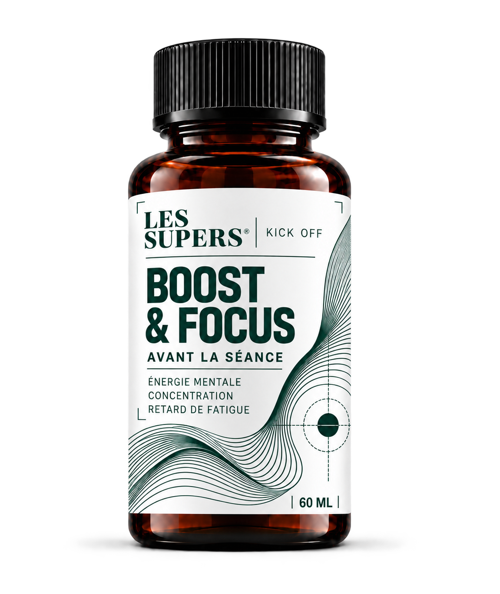

BOOST & FOCUS
Kick Off
Avant votre séance
Musculation, HIIT, cross-training : un shot pensé pour le moment où tout commence.
OBJECTIFS DE FORMULATION
Énergie mentale, concentration et fatigue retardée.
60 ml
NUTRITION SPORTIVE : MICRONUTRIMENTS x EXTRAITS VÉGÉTAUX
Des shots prêts à boire qui associent des extraits de plantes à des actifs de nutrition sportive, pour accompagner les moments clés de votre pratique.
Découvrir les 4 shots →Formules en développement.

Prêt à boireFormules transparentesActifs sélectionnés avec exigence
01 / VOTRE QUOTIDIEN
Une séance avant le travail. Une sortie longue le dimanche. Ou simplement l’envie de recommencer demain.
Il y a l’avant, le pendant, l’après. Et les nuits qui font aussi partie de votre routine. Les Supers prend forme autour de ces quatre moments.
Trouver votre moment →02 / NOTRE APPROCHE
Quatre shots de 60 ml, quatre intentions.
Choisissez celui qui vous parle.
BOOST & FOCUS
Avant votre séance
Musculation, HIIT, cross-training : un shot pensé pour le moment où tout commence.
Énergie mentale, concentration et fatigue retardée.
ENDURANCE+
Avant & pendant l’effort
Running, vélo, trail : un usage envisagé 30 minutes avant et pendant les efforts de 90 minutes et plus.
Endurance musculaire et apport d’oxygène aux muscles.
RECUP’ & ANTI-OX
Après la séance ou en fin de journée
L’entraînement est terminé. Place à un autre temps fort de votre routine.
Courbatures réduites, soutien articulaire et relaxation.
SLEEP & REPAIR
Un rituel 30 minutes avant le coucher
Quand la journée ralentit, votre routine sportive change elle aussi de rythme.
Qualité du sommeil et récupération nocturne.
Gamme en développement : les bénéfices ci-dessus sont des objectifs de formulation, pas des effets démontrés sur les produits. Composition, conditions d’utilisation et prix seront précisés avant le lancement.
03 / LA SCIENCE
La naturalité est notre point de départ. Pour choisir un shot, vous devez aussi pouvoir comprendre ce qu’il contient et pourquoi.
Les compositions ne sont pas encore finalisées. Les effets annoncés comme objectifs devront être évalués au regard des ingrédients, des dosages et des formules retenues.
Expliquer le rôle de chaque ingrédient et préciser son origine.
Donner des repères clairs pour comprendre chaque shot.
Distinguer les intentions de formulation des bénéfices effectivement établis.
04 / NOTRE ENGAGEMENT
Notre ambition : développer des shots qui trouvent leur place dans une vie active, avec une attention portée aux ingrédients et une information compréhensible.
Pas besoin de viser un podium pour vouloir faire des choix éclairés.
Construire cette approche avec nous ↗05 / NOTRE HISTOIRE
Faire se rencontrer le sport et la naturalité dans un petit format.
Les Supers prend forme autour de quatre moments de la pratique sportive. Aujourd’hui, le projet se construit : vos habitudes, vos attentes et vos choix vont nous aider à préciser la gamme.
Le prochain chapitre, on aimerait l’écrire avec vous.
Les Supers06 / CONSTRUIRE ENSEMBLE
Un shot vous donne envie ? Dites-nous lequel, votre budget et si vous envisageriez de l’acheter.
Étude d’intérêt · Aucun achat ni paiement.
Prix et compositions encore à définir.